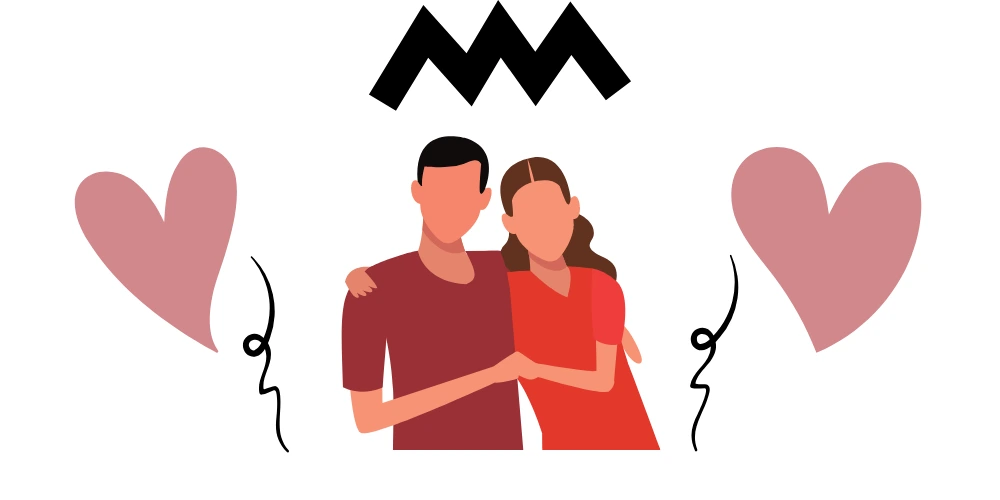
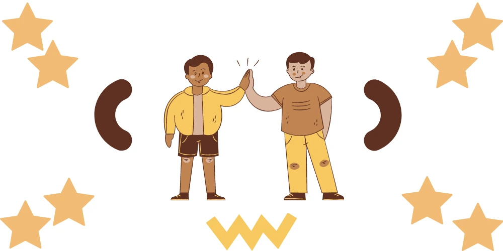

In romantic relationships, as with relationships with friends, family and colleagues, it may be easy to take one another for granted. But as psychologists tell us “we teach people how to treat us,” how someone treats us in relationships largely depends on us – on boundaries we set.

In romantic relationships, for instance, the health and stability of a union spring from the respective emotional and psychological health of the persons involved. This determines a relationship. The more emotionally healthy and open a person is, generally, the clearer their values are and their expectations in a relationship.
For instance, John keeps coming home late in the night and for the slightest reason screams at Annette. His wife, who, in turn, retreats to her room crying at her husband’s ill-treatment. Another example is having your teenager stay out late every day and coming back home drunk. The dynamics of these relationships are skewed to enable John’s abusive behaviour and your teenager’s behaviour respectively and leave you on the receiving end.
These unhealthy relationship patterns are fueled by passiveness on the other’s part. It’s an inability to maintain one’s boundaries.
Boundaries are what protect us from stress caused by others’ bad behaviour. Lack of it is at the root of many challenging relationships. Setting boundaries in relationships not only keep off toxic people. It makes us attract people who are also emotionally healthy for us.
How to Set Boundaries in Relationships?
Want to get the respect and love you deserve in your relationship again and stop coping with toxic behaviour? We suggest the following simple – but definitely not easy steps.
Love Yourself
You may never understand the need for boundaries if you do not love yourself.
People who set clear boundaries for how they want others to treat them are people who likely treat themselves well too. If you love yourself well enough, you will most likely not tolerate an abusive partner. If you do not respect yourself, it will be difficult to identify what behaviours count as disrespectful.
“Take yourself out”; spend more time with yourself; enjoy your thoughts and your space. Write down clear goals for your personal development, career, and family life. If you have strong self-worth – as well known social psychologist Morris Rosenberg describes it – you are likely to set healthy values and goals. Once you are clear about who you are, it will not be difficult to decide what you do not like.
Set Clear Boundaries in relationships
Do not give your partner an opportunity to second guess your boundaries. Let it be clear from the onset. Your boundaries regarding your emotional, physical, or spiritual health must be clearly stated. So, your partner knows when he or she has overstepped.
This is important because what may be offensive to you may be acceptable to someone else. As people have different childhood experiences and family backgrounds, which can form their thoughts and values. But, as psychologist Dr Fran walfish’s notes, learn to say “No” when you aren’t comfortable with someone’s behaviour.
If your partner scrolls through your phone messages without your permission and it annoys you, let them know right there and then. When your teenager types away on his phone while you talk to him, let him or her know if you find this disrespectful. If you do not address the matter regarding what your boundaries are, you will expose yourself to more anxiety.
How much time do you want your partner spending on their phones when you are around? Are you OK with your teenager staying out late into the night? Or do you consider a certain touch by your colleague inappropriate? Instead of coping with someone’s behaviour, establish your boundaries to stop the flow-on effects on your mental health.
Why should we speak up when our boundaries in relationships are violated?
Why set a boundary you are not ready to commit to? Why set a boundary even you will not respect? When our boundaries are breached and if we don’t speak up, it shows that we do not respect our own rules. So, why should anyone else?
It may feel difficult. Whenever our personal boundaries are crossed, speak up to reinforces them. It places a demand on the other person to respect those boundaries. Furthermore, if overstepping your boundaries has consequences, ensure to give out those consequences without feeling guilty.
A part of you might want to let go and dismiss a breach as a one-time act. However, it soon becomes repeated until you can no longer get the person to respect that boundary. This will only leave you on the receiving end of a bad situation.

Psychologists affirm that the key to having a thriving personal life journey is healthy self-esteem. It determines what you will and will not accept in your interactions with others. Although it may seem difficult at first, learning to assert yourself not only unleashes the joy of loving and respecting you. And Learn boundaries in a relationship also lowers your stress levels and attracts you to healthy people and relationships.